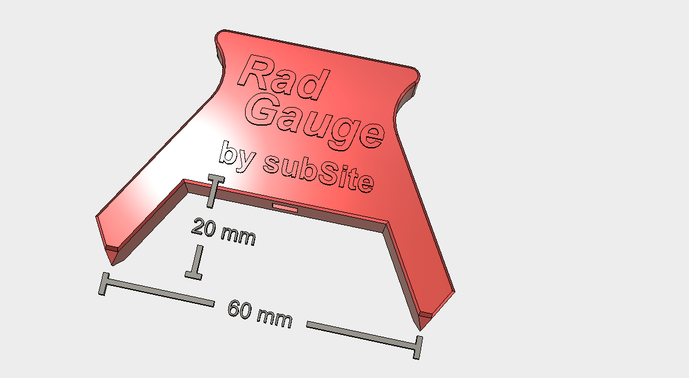

RadGauge Companion Calculator
20 mm offset (RadGauge Default)
0 (Zeroed caliper)
This is a companion app for the RadGauge radius gauge. STL-file for printing can be found on thingiverse
©
subSite
2018